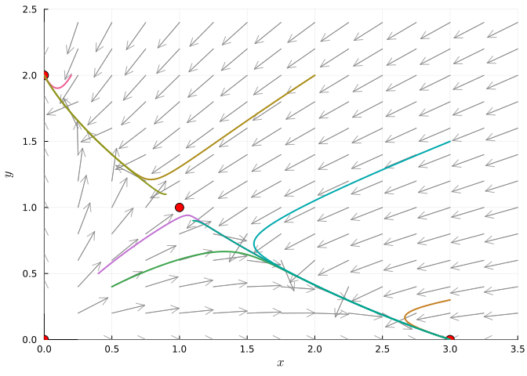
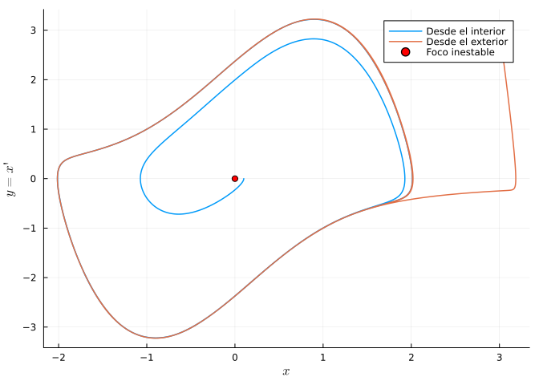
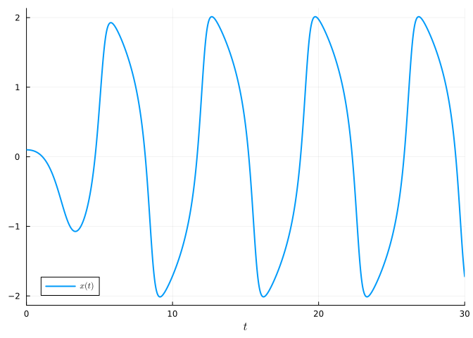
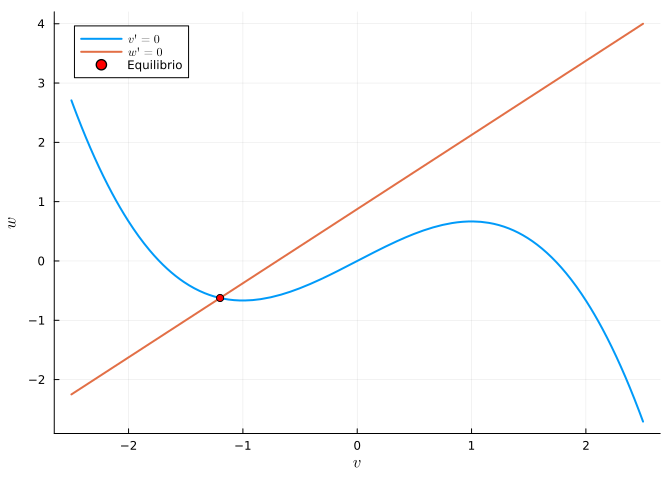
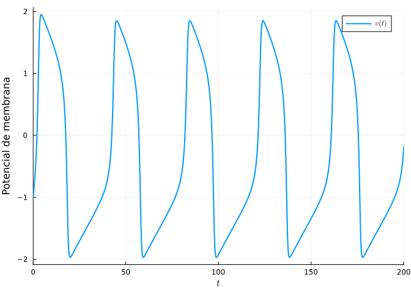
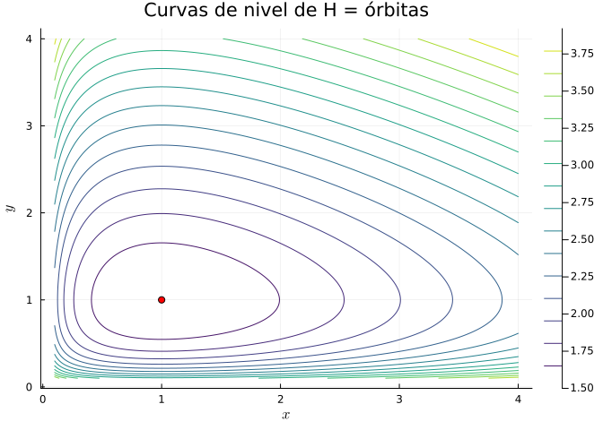

5 Sistemas de ecuaciones diferenciales no lineales
En un sistema autónomo no lineal \(\mathbf{x}' = F(\mathbf{x})\) el comportamiento cualitativo se estudia linealizando en torno a cada punto de equilibrio \(\mathbf{x}^*\): cerca de él el sistema se comporta como \(\mathbf{u}' = J(\mathbf{x}^*)\,\mathbf{u}\), donde \(J\) es la matriz jacobiana de \(F\). Los autovalores de \(J(\mathbf{x}^*)\) clasifican el equilibrio (nodo, silla, foco, centro), siempre que ninguno tenga parte real nula (teorema de Hartman–Grobman). Además pueden aparecer fenómenos ausentes en los sistemas lineales: ciclos límite, órbitas homoclinas y bifurcaciones.
5.1 Ejercicios resueltos
Para la realización de esta práctica se requieren los siguientes paquetes:
using SymPyPythonCall # Cálculo simbólico y jacobianas.
using LinearAlgebra # Autovalores de la linealización.
using Plots # Dibujo de gráficas.
using DifferentialEquations # Resolución numérica.
using LaTeXStrings # Código LaTeX en los gráficos.
using NLsolve # Puntos de equilibrio.
NotaVersiones de Julia y de los paquetes utilizados
Status `~/.julia/environments/v1.12/Project.toml` [0c46a032] DifferentialEquations v8.0.2 [b964fa9f] LaTeXStrings v1.4.0 [91a5bcdd] Plots v1.41.6 [bc8888f7] SymPyPythonCall v0.5.1 [37e2e46d] LinearAlgebra v1.12.0
A lo largo de la esta práctica usaremos la siguiente función auxiliar para dibujar campos vectoriales normalizados.
function campo_vectorial(f, g, xs, ys; escala = 0.35, kwargs...)
X = [x for y in ys for x in xs]
Y = [y for y in ys for x in xs]
U = f.(X, Y)
V = g.(X, Y)
N = sqrt.(U .^ 2 .+ V .^ 2) .+ 1e-12
quiver(X, Y, quiver = (escala * U ./ N, escala * V ./ N),
color = :gray, alpha = 0.7; kwargs...)
end;Ejercicio 5.1 Linealización de un modelo de competencia. Dos especies compiten según
\[ \begin{cases} x' = x\,(3 - x - 2y) \\ y' = y\,(2 - x - y) \end{cases} \]
Hallar los puntos de equilibrio y la matriz jacobiana del sistema.
NotaAyudaLa jacobiana de \((f, g)\) es \(J = \begin{psmallmatrix} f_x & f_y \\ g_x & g_y \end{psmallmatrix}\). Usar
solvepara los equilibrios y construir la jacobiana condiff.TipSoluciónusing SymPyPythonCall @syms x y f = x * (3 - x - 2y) g = y * (2 - x - y) equilibrios = solve([f, g], [x, y])4-element Vector{Tuple{Sym{PythonCall.Py}, Sym{PythonCall.Py}}}: (0, 0) (0, 2) (1, 1) (3, 0)J = [diff(f, x) diff(f, y); diff(g, x) diff(g, y)]\(\left[\begin{smallmatrix}- 2 x - 2 y + 3 & - 2 x\\- y & - x - 2 y + 2\end{smallmatrix}\right]\)
Los equilibrios son \((0,0)\), \((3,0)\), \((0,2)\) y el de coexistencia \((1, 1)\).
Clasificar cada equilibrio evaluando los autovalores de la jacobiana. ¿Existe coexistencia estable?
TipSoluciónusing LinearAlgebra for eq in equilibrios Je = J.subs(Dict(x => eq[1], y => eq[2])) vals = eigvals(Float64.(Je)) println("Equilibrio $eq → autovalores $(round.(vals, digits=3))") endEquilibrio (0, 0) → autovalores [2.0, 3.0] Equilibrio (0, 2) → autovalores [-2.0, -1.0] Equilibrio (1, 1) → autovalores [-2.414, 0.414] Equilibrio (3, 0) → autovalores [-3.0, -1.0]- \((0,0)\): autovalores \(3, 2\) (positivos) → nodo inestable.
- \((3,0)\) y \((0,2)\): autovalores de signo opuesto y del mismo signo respectivamente; \((3,0)\) resulta ser un nodo estable y \((0,2)\) un punto de silla (según los signos obtenidos).
- \((1,1)\): autovalores reales de signo opuesto → punto de silla, inestable.
Como el equilibrio de coexistencia es una silla, no hay coexistencia estable: dependiendo de las condiciones iniciales, una especie desplaza a la otra (exclusión competitiva).
Dibujar el diagrama de fases con las órbitas y comprobar la clasificación anterior.
TipSoluciónusing Plots, LaTeXStrings, DifferentialEquations fn(x, y) = x * (3 - x - 2y) gn(x, y) = y * (2 - x - y) plt = campo_vectorial(fn, gn, 0:0.25:3.5, 0:0.2:2.5, escala = 0.25, xlab = L"x", ylab = L"y", legend = false, xlims = (0, 3.5), ylims = (0, 2.5)) scatter!(plt, [0,3,0,1], [0,0,2,1], color = :red, ms = 6) function comp!(du, u, p, t) du[1] = fn(u[1], u[2]); du[2] = gn(u[1], u[2]) end for u0 in [[0.5,0.4],[0.4,0.5],[2,2],[3,1.5],[0.2,2],[3,0.3],[1.1,0.9],[0.9,1.1]] sol = solve(ODEProblem(comp!, float.(u0), (0.0, 15.0))) plot!(plt, sol, idxs = (1, 2), lw = 2) end plt
Las órbitas confirman que \((1,1)\) es una silla: la separatriz que entra en él divide el plano en dos cuencas de atracción, una hacia \((3,0)\) y otra hacia \((0,2)\).
Ejercicio 5.2 Ciclo límite: el oscilador de Van der Pol. El circuito de Van der Pol, usado históricamente en osciladores electrónicos y como modelo del latido cardíaco, obedece
\[ x'' - \mu(1 - x^2)x' + x = 0 \;\Longleftrightarrow\; \begin{cases} x' = y \\ y' = \mu(1 - x^2)y - x \end{cases} \]
con \(\mu = 1.5\).
Comprobar que el único equilibrio \((0,0)\) es un foco inestable, de modo que las órbitas cercanas se alejan de él.
TipSoluciónusing LinearAlgebra μ = 1.5 J0 = [0 1.0; -1 μ] # Jacobiana en (0,0) eigvals(J0)2-element Vector{ComplexF64}: 0.75 - 0.6614378277661476im 0.75 + 0.6614378277661476imLos autovalores son complejos con parte real positiva (\(0.75 \pm 0.66i\)): el origen es un foco inestable.
Resolver el sistema desde una condición inicial cercana al origen y otra lejana, y comprobar que ambas convergen al mismo ciclo límite.
NotaAyudaUn ciclo límite es una órbita cerrada aislada a la que tienden las trayectorias vecinas. Resolver desde dentro (p. ej. \((0.1, 0)\)) y desde fuera (p. ej. \((3, 3)\)) y superponer las órbitas.
TipSoluciónusing Plots, LaTeXStrings, DifferentialEquations function vdp!(du, u, p, t) du[1] = u[2] du[2] = 1.5 * (1 - u[1]^2) * u[2] - u[1] end plt = plot(xlab = L"x", ylab = L"y = x'", legend = :topright) for (u0, lab) in [([0.1, 0.0], "Desde el interior"), ([3.0, 3.0], "Desde el exterior")] sol = solve(ODEProblem(vdp!, u0, (0.0, 30.0)), saveat = 0.01) plot!(plt, sol[1, :], sol[2, :], lw = 1.5, label = lab) end scatter!(plt, [0], [0], color = :red, label = "Foco inestable") plt
Ambas trayectorias, una que espiralea hacia afuera y otra hacia adentro, terminan enrollándose sobre la misma curva cerrada: el ciclo límite. La serie temporal muestra las características oscilaciones de relajación:
sol = solve(ODEProblem(vdp!, [0.1, 0.0], (0.0, 30.0)), saveat = 0.01) plot(sol, idxs = 1, lw = 2, label = L"x(t)", xlab = L"t")
Este comportamiento (oscilación autosostenida independiente de la amplitud inicial) es imposible en un sistema lineal y modela, por ejemplo, la periodicidad robusta del latido cardíaco.
Ejercicio 5.3 Modelo de FitzHugh–Nagumo (neurociencia). La actividad de una neurona se describe con
\[ \begin{cases} v' = v - \dfrac{v^3}{3} - w + I \\ w' = 0.08\,(v + 0.7 - 0.8\,w) \end{cases} \]
donde \(v\) es el potencial de membrana, \(w\) una variable de recuperación e \(I\) la corriente de estímulo.
Para \(I = 0\), dibujar las nulclinas (\(v'=0\) y \(w'=0\)), localizar el punto de equilibrio como su intersección y clasificarlo.
NotaAyudaLas nulclinas son las curvas donde cada derivada se anula: \(w = v - v^3/3 + I\) (nulclina de \(v\), cúbica) y \(w = (v+0.7)/0.8\) (nulclina de \(w\), recta). El equilibrio se calcula con
nlsolvey se clasifica con la jacobiana.TipSoluciónusing NLsolve I = 0.0 F(u) = [u[1] - u[1]^3/3 - u[2] + I, 0.08*(u[1] + 0.7 - 0.8u[2])] eq = nlsolve(F, [-1.2, -0.6]).zero2-element Vector{Float64}: -1.1994080352440788 -0.6242600440550986using SymPyPythonCall, LinearAlgebra @syms v w fv = v - v^3/3 - w + I gw = Sym(8)/100 * (v + Sym(7)/10 - Sym(8)/10 * w) Jsym = [diff(fv,v) diff(fv,w); diff(gw,v) diff(gw,w)] Je = Float64.(Jsym.subs(Dict(v => eq[1], w => eq[2]))) eigvals(Je)2-element Vector{ComplexF64}: -0.2512898175040307 - 0.21194934361612663im -0.2512898175040307 + 0.21194934361612663imusing Plots, LaTeXStrings nv(v) = v - v^3/3 + I # nulclina de v nw(v) = (v + 0.7) / 0.8 # nulclina de w plot(nv, -2.5, 2.5, lw = 2, label = L"v'=0", xlab = L"v", ylab = L"w") plot!(nw, -2.5, 2.5, lw = 2, label = L"w'=0") scatter!([eq[1]], [eq[2]], color = :red, label = "Equilibrio")
Con \(I=0\) los autovalores tienen parte real negativa: el equilibrio es un foco estable (neurona en reposo).
Comprobar que un estímulo \(I = 0.5\) desestabiliza el equilibrio y hace que la neurona dispare de forma repetitiva (aparición de un ciclo límite por bifurcación de Hopf).
TipSoluciónusing DifferentialEquations function fhn!(du, u, p, t) I = p du[1] = u[1] - u[1]^3/3 - u[2] + I du[2] = 0.08*(u[1] + 0.7 - 0.8u[2]) end sol = solve(ODEProblem(fhn!, [-1.0, -0.5], (0.0, 200.0), 0.5), saveat = 0.1) plot(sol, idxs = 1, lw = 2, label = L"v(t)", xlab = L"t", ylab = "Potencial de membrana")
Con la corriente aplicada, el potencial genera trenes de potenciales de acción periódicos: la neurona pasa de estar en reposo a disparar de forma sostenida, reproduciendo cualitativamente el comportamiento excitable real.
Ejercicio 5.4 Cantidad conservada en Lotka–Volterra. El sistema depredador–presa clásico \(x' = x(1-y)\), \(y' = 0.5\,y(x-1)\) posee la cantidad conservada
\[ H(x, y) = 0.5(x - \ln x) + (y - \ln y). \]
Comprobar que \(H\) es constante a lo largo de las órbitas (calculando \(\frac{d}{dt}H(x(t),y(t))\) simbólicamente) y dibujar varias curvas de nivel de \(H\), que coinciden con las órbitas del diagrama de fases.
TipSolución
using SymPyPythonCall
@syms x y
H = Sym(1)/2 * (x - log(x)) + (y - log(y))
dHdt = diff(H, x) * (x * (1 - y)) + diff(H, y) * (Sym(1)/2 * y * (x - 1))
simplify(dHdt)\(0\)
La derivada total es idénticamente nula, luego \(H\) se conserva. Sus curvas de nivel:
using Plots, LaTeXStrings
Hnum(x, y) = 0.5*(x - log(x)) + (y - log(y))
xs = ys = range(0.1, 4, length = 300)
contour(xs, ys, Hnum, levels = 15, xlab = L"x", ylab = L"y",
color = :viridis, title = "Curvas de nivel de H = órbitas")
scatter!([1], [1], color = :red, label = "")
Cada órbita del sistema es una curva cerrada \(H = \text{cte}\) que rodea el centro \((1,1)\); esta es la razón matemática por la que las poblaciones oscilan periódicamente sin amortiguarse.
5.2 Ejercicios propuestos
Ejercicio 5.5 Epidemiología. Estudiar los equilibrios y su estabilidad del modelo SIR con demografía \(S' = \mu - \beta SI - \mu S\), \(I' = \beta SI - (\gamma+\mu)I\), y determinar el número reproductivo básico \(R_0\) que separa el equilibrio libre de enfermedad del endémico.
Ejercicio 5.6 Física. Para el sistema \(x' = -x + y\), \(y' = -y + x^3\), hallar los tres equilibrios, clasificarlos y dibujar las cuencas de atracción de los dos estables.
Ejercicio 5.7 Cinética química. Estudiar el Bruselador \(x' = 1 - (b+1)x + a x^2 y\), \(y' = bx - ax^2y\) con \(a = 1\), y encontrar el valor de \(b\) para el que aparece un ciclo límite por bifurcación de Hopf.
Ejercicio 5.8 Mecánica. Explorar numéricamente el péndulo forzado \(\theta'' + 0.5\theta' + \sin\theta = 1.1\cos(0.8t)\) y describir la sensibilidad a las condiciones iniciales (preludio del capítulo sobre caos).